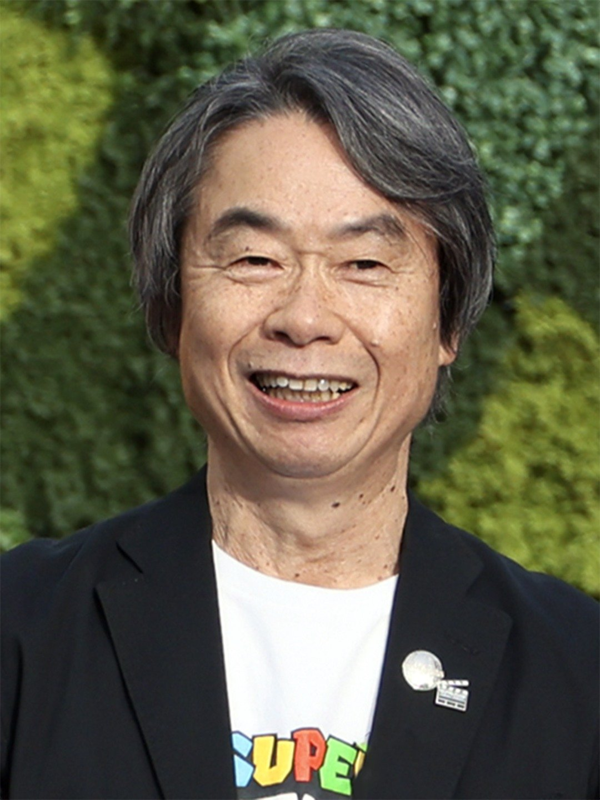

01
Super Mario Bros. - Ground Theme
"Ground Theme" was not just the music heard in Super Mario Bros.' first level or the Mario franchise's theme song; it was arguably the theme song for video games as a whole. Besides sounding like childlike wonder and being repetitive, Ground Theme was so iconic that it was used or referenced by almost everything related to gaming, whether it was connected to the '80s classic Super Mario Bros. or not.
